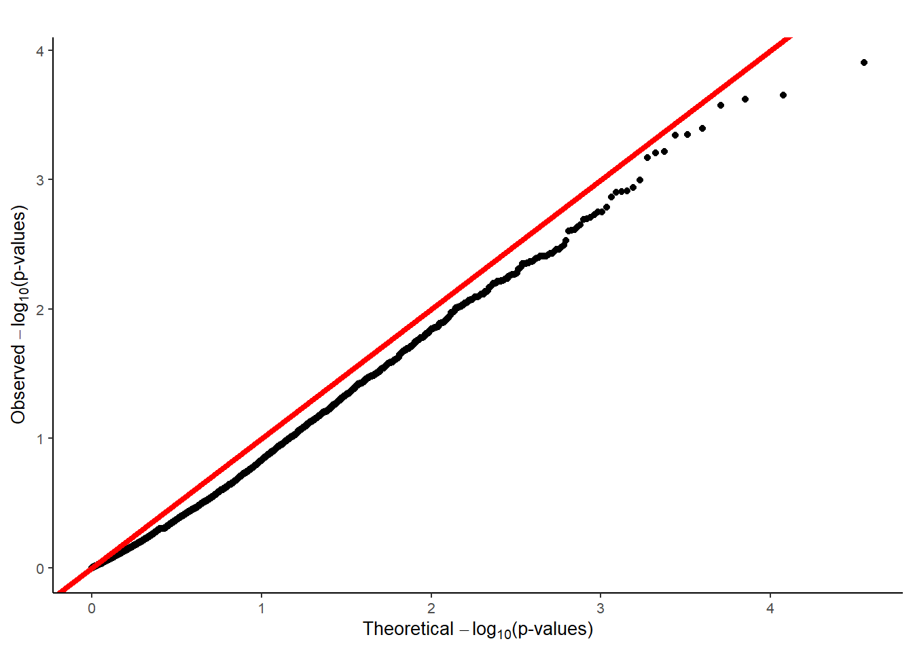

for STAAR analysis
apply AF filter \(AF<5\%\)
within each of 6 variant groups, use ACAT-V to combine single variant p values of binomial test using weights in the paper \(w_{i, ACAT-V}=Beta(MAF_i, a1=1, a2=25)*\sqrt{MAF_i(1-MAF_i)}\). Variants with MAC<10 are collapsed for burden test, with weight \(w_{0, ACAT-V}\).
use ACAT-O to combine 6 group level ACAT p values in the last step with equal weight as in the paper, as STAAR p value for each gene.
This R Markdown site was created with workflowr